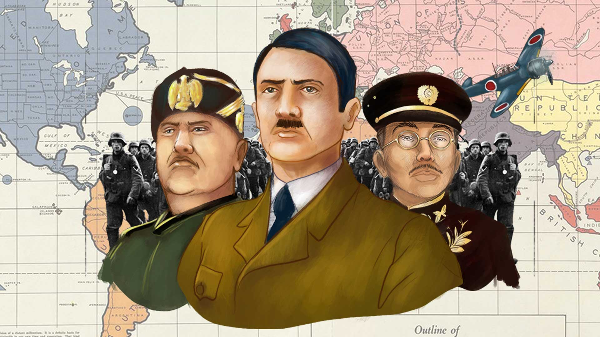

| PERSONAJES DE LA 2DA GUERRA |
- Adolf Hitler (1889-1945):
-
Canciller de Alemania desde 1933, impulsó el rearme y la expansión territorial alemana que llevó a la invasión de Polonia y provocó el inicio de la Segunda Guerra Mundial. Se quitó la vida en su búnker de Berlín el 30 de abril de 1945 ante la inminente derrota
- Benito Mussolini (1883-1945):
Líder de la Italia fascista desde 1922, se alió con la Alemania nazi y decidió el ingreso de Italia en la Segunda Guerra Mundial en 1940, cuando el ejército alemán ocupó Francia
- Franklin D. Roosevelt (1882-1945):
Presidente de Estados Unidos desde 1933 hasta 1945
|

|